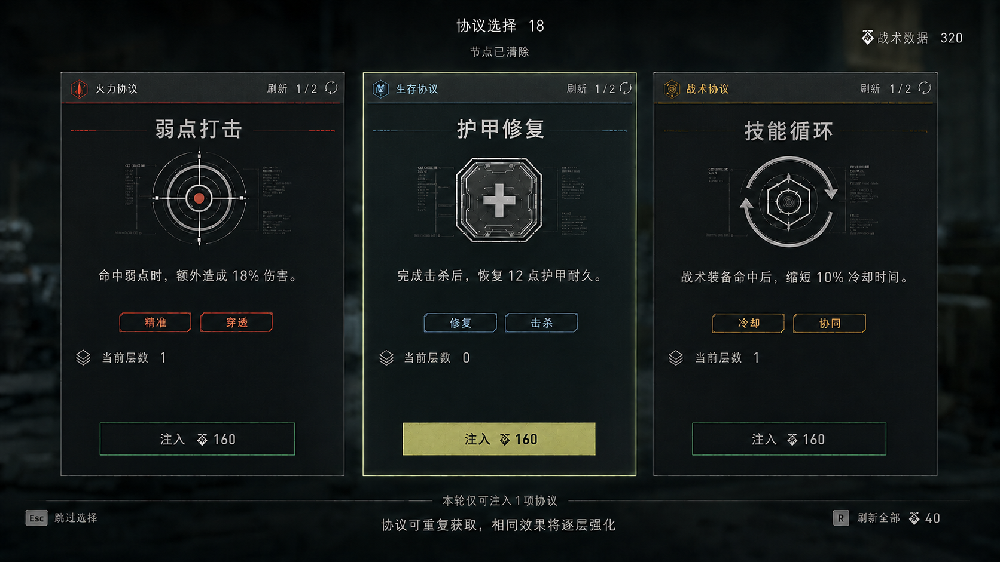

如何加入肉鸽变化，同时不破坏“搜打撤”的学习价值？
我的答案是：不随机地图本身。玩家已经记住的地点、道路和资源倾向继续有效；变化只发生在任务、敌军、门禁、环境词缀与回传机会。
协议只能改变触发条件和战术选择，不能自动替玩家瞄准、射击或清场。
POI 真实位置、道路基本连接与核心资源倾向不变，避免玩家每局重新背图。
分叉口在进入前预告节点类型、主要收益与负面词缀，允许队伍做有信息的选择。
| 设计层 | 必须保留 | 允许变化 |
|---|---|---|
| 地图 | POI 位置、道路连接、掩体尺度 | 门禁、支路开放、回传终端、限时通行 |
| 搜索 | 容器和军械箱的交互习惯 | 战术数据、活动武器、节点任务物 |
| 战斗 | 枪械反馈、伤害可读性、兵种职责 | 兵种组合、增援方向、精英词缀 |
| 成长 | 主动操作与干员技能定位 | 协议候选、品质、重复叠加顺序 |
每一段推进都要回答：现在止盈，还是用现有构筑承担更高风险？
全局由 AI 追踪等级限制搜索时间。推进、停留、警报与继续深入都会提高追踪；回传只保存成果，不会把威胁清零。因此玩家无法通过反复搜刮把风险完全消除。
击败任意区域首领后撤出，按深度结算；并非只有最终通关才算有收益。
未回传情报随战场回滚而丢失；已回传成果保留，降低长局失败的挫败。
完成四层区域、击败黑域核心并撤出，获得最高结算倍率和完整通关记录。
用长弓溪谷现有 POI 构成“稳定地理 + 动态任务”的路线网络
沙径牧场承担初始安全区与战术包选择。第一个分叉预告两条主路线的威胁、产出和环境词缀；后续节点通过安全门、闸门、烟幕与电磁墙划定战斗区，不改动核心地形。
协议是麦晓雯拆分的入侵工具，不是脱离世界观的超能力
玩家完成节点后，从临时开放的三个作战协议中选择一个。黑域 AI 会持续干扰代码权限，因此候选组合每轮变化；同名协议可重复获取并升级，但强化必须改变玩家的战斗判断，而不是只抬高面板。

火力协议
围绕弱点、换弹与连续击杀改变输出节奏。
例：弱点打击／高速装填／连环猎杀生存协议
围绕护甲、击杀恢复与低生命容错延长作战窗口。
例：应急护甲／战地医疗／最后防线战术协议
围绕技能、标记、战术道具与资源回收改变团队分工。
例：快速部署／战术标记／战术回收系统可以存在隐藏组合，但活动不提供公开的固定配方表，也不把“凑套装”设计成唯一最优解。标签用于帮助玩家建立猜测，真正的联动效果通过实战反馈被发现；平衡上通过触发间隔、叠加上限与候选权重避免形成必选答案。
搜索物从“卖价”转化为本轮构筑资源与可回传情报
容器不再只提供普通物资。玩家会搜索战术数据、协议碎片、权限密钥与高价值情报：前三者服务本轮推进，情报则决定结算收益。关键任务物不占普通背包格，避免活动目标与基础搜刮体验互相挤压。
单节点内成本递增。玩家可以修正坏选项，但无法无限刷新到理想 Build。
- 战术数据击杀、搜索与节点目标产出；购买补给、刷新协议、升级武器。
- 协议碎片提高后续协议品质或为同名协议升级，承担“立即购买还是留到下一节点”的机会成本。
- 权限密钥打开高价值支路、军械库或回传终端，直接改变路线选择。
- 高价值情报完成回传后计入结算；未回传部分在断连或全队失败时丢失。
合作来自共享路线与互补行为，不来自强制职业锁定
| 交互 | 规则 | 要解决的问题 |
|---|---|---|
| 路线投票 | 节点结束后从 2—3 条路线投票，平票由队长确认 | 允许讨论，同时避免路人局长时间僵持 |
| 独立三选一 | 每人拥有自己的协议候选，战术数据不被队友抢走 | 保留个人构筑，减少分配冲突 |
| 协议推荐 | 区域结束时可付费把未选协议推荐给队友 | 补齐队伍短板，但保留成本 |
| 撤离表决 | 击败区域首领后由多数决定撤出或深入 | 避免单个玩家绑架整队收益 |
| 死亡与救援 | 完全死亡者节点后复活，并损失一个随机协议 | 保留死亡成本，避免长局中途只能观战 |
优先调整战场压力和决策成本，而不是单纯堆高敌人血量
从 Lv.1 提升至 Lv.5，增加兵种协同、刷新方向和进攻性；回传不降低追踪，阻止无限发育。
高价值节点增加精英、门禁与环境干扰，低价值节点提供稳定补给；两者在进入前明示。
用价格、品质权重、叠加上限和触发间隔调节，避免依赖公开套装形成唯一答案。
根据队伍主要输出方式选择弱点转移或支援干扰；允许通过走位与技能处理，不直接免疫主流派。
按人数调整敌军数量、刷新方向、协同目标数和救援窗口；首领基础机制保持一致。
四层基础倍率暂定 100%／130%／170%／220%，后续必须由通关时长和失败率共同校准。
目前没有实机结果，因此先把需要被证伪的假设写清楚
视觉原型证明的是信息组织，不是玩法成立。下一步应先做灰盒节点和协议选择原型，用小规模测试判断路线是否可读、风险是否真的影响决策。
以上均为待验证标准，不是已经得到的结果。首轮原型只需要完成“沙径牧场—两个分叉节点—一个区域首领—回传／深入”最小闭环；在验证路线可读性与止盈决策前，不扩写完整四层内容。